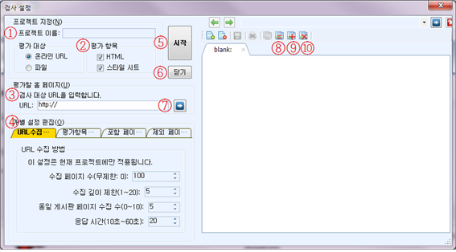
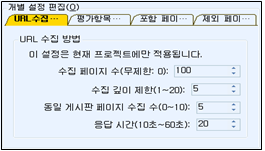
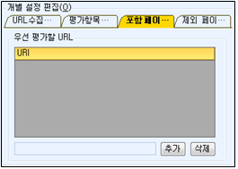
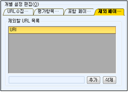

프로젝트 생성 및 편집
1) 프로젝트 생성 방법
새로운 웹사이트에 대한 자동점검을 수행하기 위해서 다음 방법 중 한 가지 방법으로 프로젝트를 생성할 수 있습니다. KW3C2.0은 이 기능을 실행하는 방법을 세 가지 제공합니다.
우선 메뉴를 이용하여 프로젝트를 생성할 수 있습니다. 두 번째 방법은 툴바 아이콘을 이용하는 방법입니다. 세 번째는 시작화면의 좌측에 마련된 ‘프로젝트 새로 만들기’ 링크를 클릭하는 것입니다.
첫 번째와 같이 메뉴를 이용하는 방법은 키보드를 지원하는 방법입니다. 두 번째와 세 번째 방법은 마우스 사용자를 위한 방법입니다.
(1). 메뉴의 [파일]-[프로젝트 생성]을 선택, 시작화면의 최근 점검한 프로젝트에서 [프로젝트 새로 만들기]를 선택, 또는 화면 상단의 툴바에서 [생성] 아이콘을 선택하면 아래 그림과 같은 [프로젝트 생성] 창이 열립니다.

그림에 표시된 번호는 설명을 위해 추가된 번호입니다. 프로젝트 검사 설정 창의 각 항목은 다음과 같습니다.
① 프로젝트 이름 : 새로 평가할 웹사이트 또는 파일 묶음에 관한 프로젝트 이름을 입력하는 곳입니다. 프로젝트 이름은 가급적 평가하는 웹사이트를 연상시키는 이름으로 설정하는 것이 프로젝트 관리에 편리합니다.
※ 프로젝트 이름은 파일명을 작성하는 것과 방법이 동일합니다. 따라서 프로젝트 이름에는 금칙 문자('/')를 포함해서는 안 됩니다.
② 평가대상 : 평가하려는 대상 웹페이지가 웹사이트로부터 다운받아야 하는 웹페이지인지 또는 PC에 저장된 파일인지를 결정하는 라디오 버튼입니다.
- 온라인 URL : 인터넷으로부터 다운받는 웹페이지를 점검하고자 할 때 선택합니다. 이 항목을 선택하면 평가할 URL을 입력하는 화면으로 변경됩니다. 기본 값이 이 항목입니다. [④평가할 홈페이지]를 참고하십시오.
- 파일 : 컴퓨터에 저장된 웹페이지들을 점검하고자 할 때 선택합니다. 이 항목을 선택하면 평가할 파일을 찾고, 입력하도록 화면의 모습이 변경됩니다. [⑤평가할 파일]을 참고하십시오.
③ 평가항목 : 웹표준 평가 기준을 선택합니다. 이 항목은 둘다 선택하거나 하나만 선택할 수 있습니다.
- HTML : 웹표준 평가시 HTML문법의 표준 준수 여부를 평가하고자 할 때 선택합니다.
- 스타일 시트 : 웹표준 평가시 CSS 문법의 표준 준수여부를 평가하고자 할 때 선택합니다.
④ 평가할 홈페이지 : 평가대상이 ‘온라인 URL’인 경우에 평가할 웹주소(URL)를 입력합니다. 이 항목에는 평가할 대표 홈페이지 URL를 입력합니다.
※ URL은 두가지 방법으로 입력할 수 있습니다.
- 직접 입력 : URL 난에 직접 입력합니다. URL을 입력한 후 [버튼⑦]을 누르면 오른쪽 브라우저로 입력한 URL의 웹페이지를 확인할 수 있습니다.
- 브라우저를 이용한 입력 : 우측의 웹브러우저를 이용하여 웹 서핑을 하다가 평가할 웹페이지가 결정되면 웹브라우저 툴바의 [버튼⑧]을 눌러 해당 웹브라우저의 URL을 자동으로 URL 입력 난에 복사할 수 있습니다.
⑤ 평가할 파일 : 평가대상이 ‘파일’인 경우에 평가할 최상위 디렉토리를 입력합니다. 직접 ‘찾기’버튼을 이용하여 검색이 가능합니다. 이 경우 오른 쪽의 웹 브라우저는 사용할 수 없습니다.
⑥ 프로젝트 설정 : 이 항목은 프로젝트에 적용될 방법을 설정하는 곳입니다. 온라인 URL 평가시에는 네 가지 페이지 탭을 모두 사용할 수 있습니다. 파일 평가시에는 두번째 탭만 사용할 수 있습니다..
- 수집설정 : 프로젝트에 적용될 링크를 수집하기 위하여 웹페이지를 다운로드 받는데 필요한 설정 값입니다. 각 항목은 [웹 소스 수집 방법 설정] 메뉴를 이용하여 설정한 ‘URL수집환경 설정’에서 지정한 값으로 표시되며, 프로젝트 별로 필요에 따라 변경될 수 있습니다. 이 항목은 온라인 URL 평가 및 파일 평가에 모두 적용됩니다.

- 평가항목 : 프로젝트에 적용될 웹표준을 설정하는 값입니다. 각 항목은 [평가 항목 설정] 메뉴를 이용하여 설정한 ‘평가방법 항목 초기값 설정’에서 지정한 값으로 표시되며, 프로젝트 별로 필요에 따라 변경될 수 있습니다. 이 항목은 온라인 URL 평가 및 파일 평가에 모두 적용됩니다.

- 포함 URL : 웹표준 평가시 우선적으로 평가되는 웹페이지의 URL 목록을 지정합니다. 입력 방법은 두가지가 있습니다. 또한 아 항목은 ‘온라인 URL 평가’에만 적용됩니다.
- 입력방법 1 : URL란에 직접 입력하고 추가버튼을 누릅니다.
- 입력방법 2 : 웹브라우저에서 원하는 웹페이지를 탐색한 후 포함 URL [버튼⑨]를 클릭하면 자동으로 입력됩니다.

- 제외 URL : 웹표준 평가시 제외되는 웹페이지의 URL 목록을 지정합니다.
- 입력방법 1 : URL란에 직접 입력하고 추가버튼을 누릅니다.
- 입력방법 2 : 웹브라우저에서 원하는 웹페이지를 탐색한 후 제외 URL [버튼⑩]을 클릭하면 자동으로 입력됩니다.
